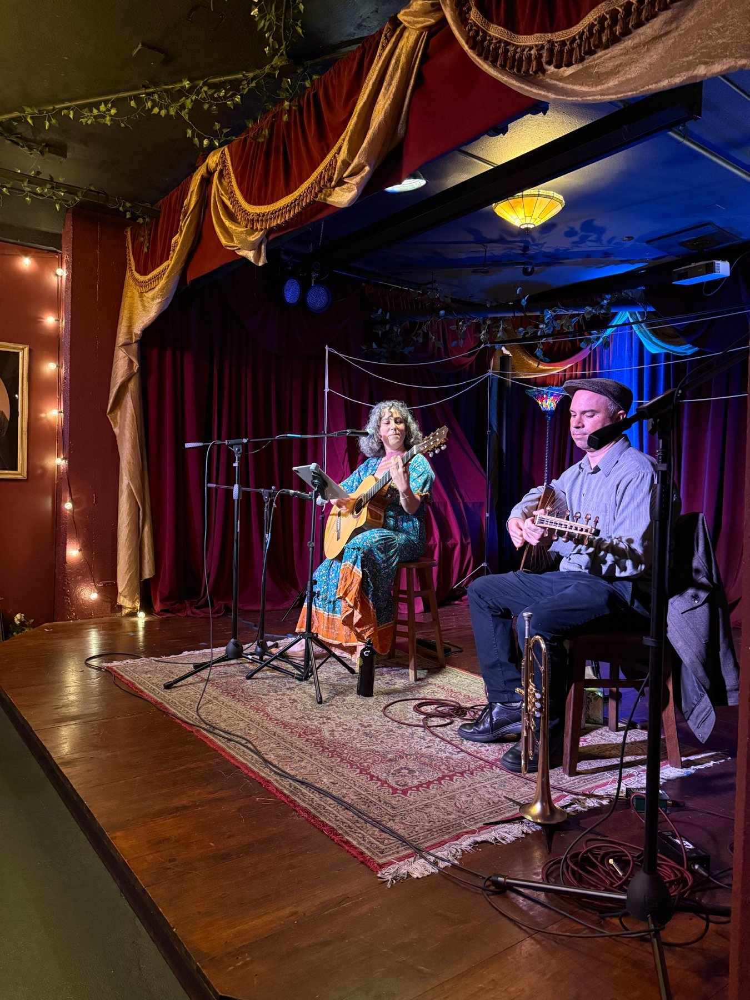

Bandleader · trumpet
Orchestra Euphonos
Bay Area Eastern European folk and klezmer, formed in 2011 and shaped by collaborations in Romanian and Moldovan music.
Peter Bonos’s musical work moves among klezmer, Balkan brass, Turkish and Anatolian repertoire, Romanian and Moldovan folk traditions, and related Eastern European and Mediterranean music.
Each ensemble has its own branch page, history and media.
Bay Area Eastern European folk and klezmer, formed in 2011 and shaped by collaborations in Romanian and Moldovan music.

Turkish, Anatolian and Mediterranean repertoire rooted in community, celebration and collaboration.

Bay Area Balkan brass with a direct, celebratory live sound.
Additional ensembles Peter performs with.
Bay Area Balkan brass ensemble.
Visit website ↗Klezmer brass ensemble.
Visit website ↗Sephardic ensemble bridging musical traditions and creating new connections across cultures.
Visit website ↗Bay Area Turkish music ensemble.
Visit website ↗Composer and multi-instrumentalist working across film, television, games and collaborative music projects.
Visit website ↗Peter’s extensive network of local and touring musicians can form a new group curated specifically for the needs of any event.
Trumpet and oud are Peter’s primary instruments. He also plays euphonium.
Explore instruments →